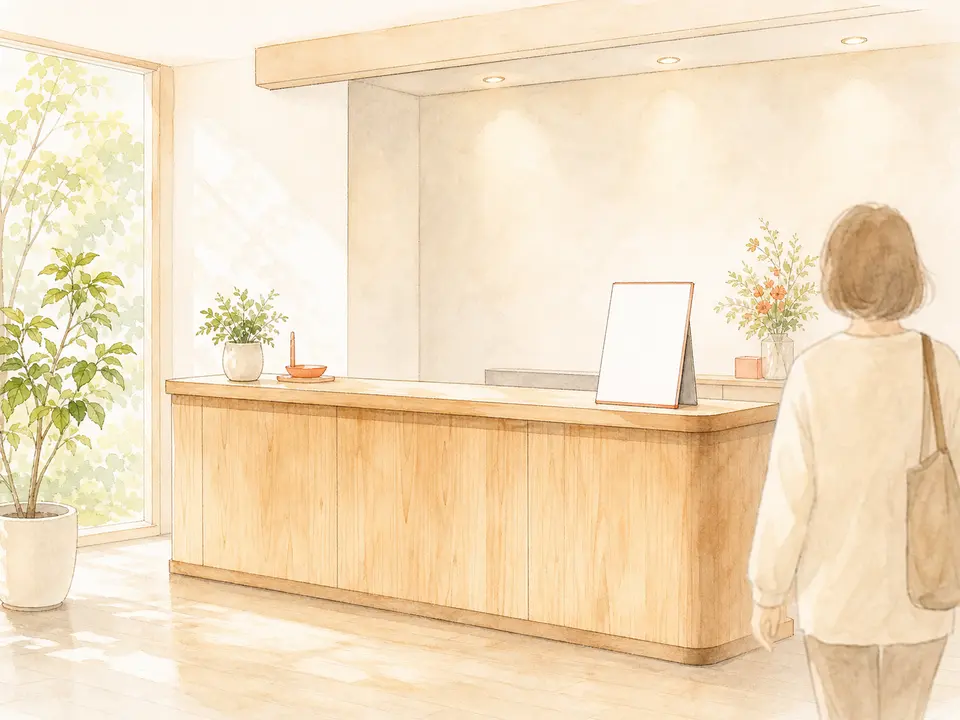
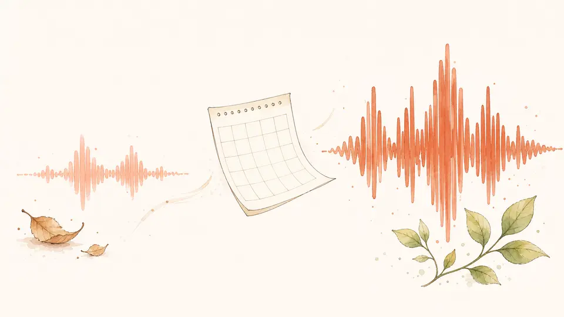

受け取るもの
分析結果レポート
10月末までにお届けします

- 検査結果声の高さ・声量の安定・語尾・響き・澄み具合・明るさ・話す速さ・間・抑揚・息継ぎ。ひとつずつ数値で
- 所見検査結果をもとに、あなたの声の状態を詳しくお伝えします
- 今年の処方箋日常の中でできる、ボイストレーナーからのアドバイスをひとつ
※ 数値は、録音環境の影響を受けます。静かなところでの録音をおすすめします。
※ 本検査は医療機関の検査ではありません。喉の痛み・違和感が続く場合は耳鼻咽喉科の受診をおすすめします。
こんな声だっけ？
声が老けた気がする。
喉に、なにか引っかかる感じがある。
あなたの声を、測ります。

気になってはいる。でも、どうすればいいか分からないまま、毎日その声で話しています。
最近、声が老けてきた気がする。
喉に、なにか引っかかった感じで話している。
録音した自分の声を聞いて、「こんな声だったっけ」と思った。
自分の声のことを、じつは一番知らないのは自分です。
そう思って、健康診断の声バージョンを作りました。
身体と同じで、声も放っておくと、気づかないうちに変わります。
ヨガや運動のように、ふだんの声に一度、意識を向ける。
スカッと声が出るのは、それだけで気持ちのいいものです。
声の人間ドックは、声を録って送るだけの総合健診です。
検査結果の数値と、20年聴いてきたわたしの耳で、あなたの声のいまを1枚のレポートにまとめます。
ボイストレーナーみか（ボイストレーナー歴20年目・Udemy講師）
10月末までにお届けします
※ 数値は、録音環境の影響を受けます。静かなところでの録音をおすすめします。
※ 本検査は医療機関の検査ではありません。喉の痛み・違和感が続く場合は耳鼻咽喉科の受診をおすすめします。
申し込む
受診キットが届く録音の手順のご案内
9月30日(水)までに
録音を提出する
10月末までに、
分析結果レポートが届く
2027年からの新規受付 12,800円
今年お申し込みの方は、この価格です
今年受診された方は、来年からもずっと9,800円のまま据え置きです。
お支払いは毎年の自動更新です。次回の決済日の前日までに、いつでも解約できます。
クレジットカード決済（Stripe）
レポートとは別に、「あなたの声の分析」を音声でお届けします。
Voicyでやっている「◯◯さんの声の分析」の、あなた版です。5〜10分ほど、あなたの声について話した音声をお届けします。
受けただけで良くなるわけではありません。ですが、改善点が見えます。今年の処方箋を1つお付けするので、取り組んでみてください。声は、変わっていきます。
健康診断と同じ形にしています。声は1年でも変わります。だから毎年、同じ条件で測るのがおすすめです。1年後にもう一度録ると、その1年で何が変わったかが見えます。
受診キットの手順どおりに録って送るだけで大丈夫です。上手に話す必要はありません。ふだんの声を聴かせてください。
